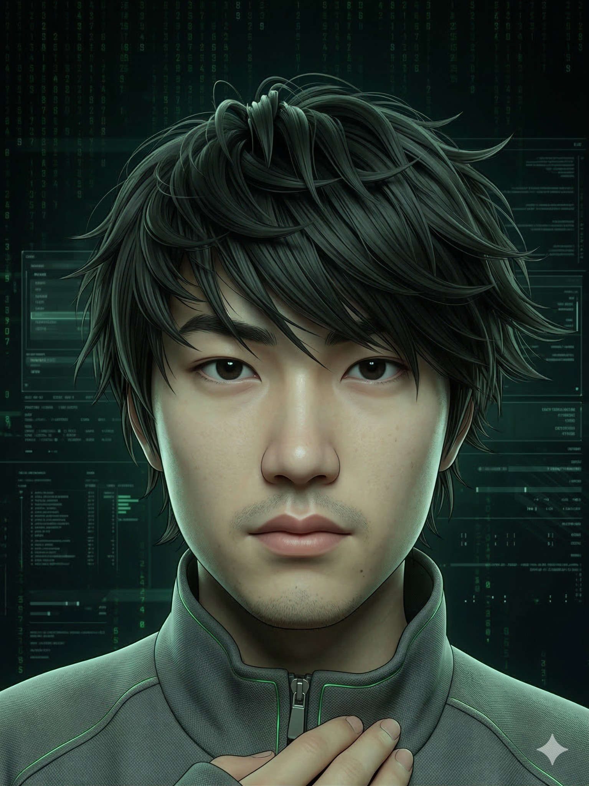
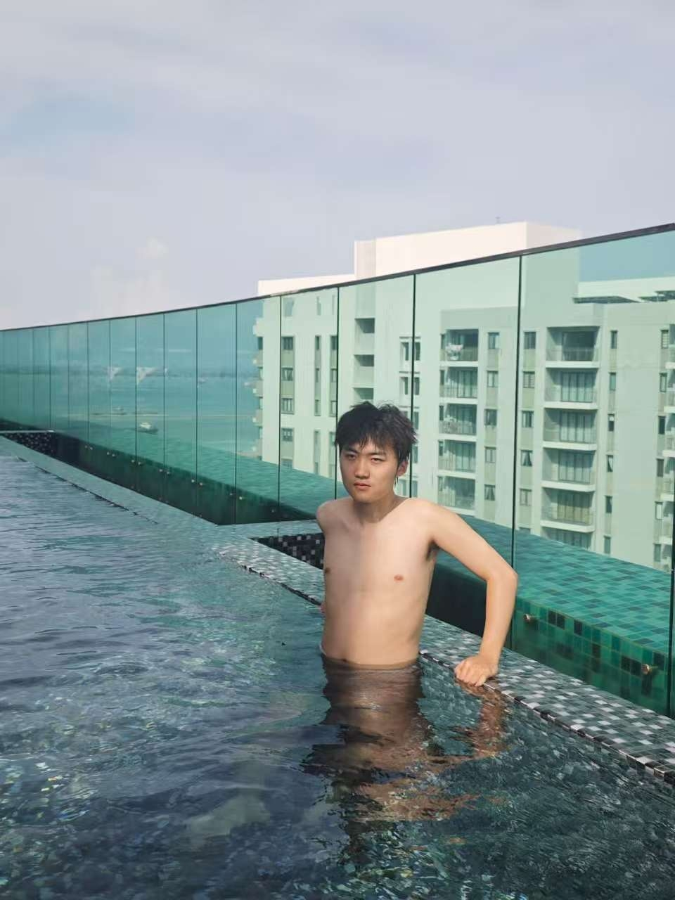
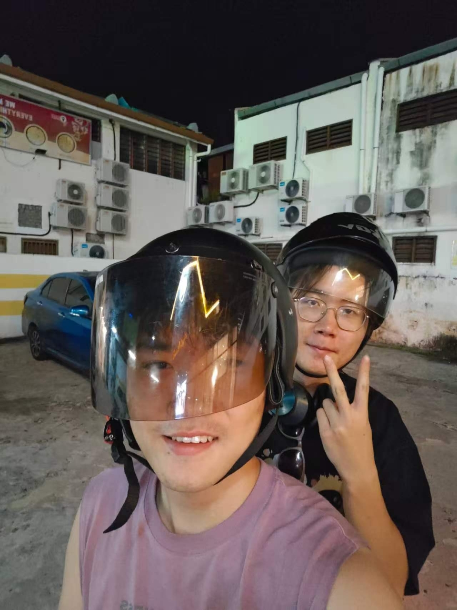

Focusing on next-generation energy storage, high-entropy alloys, and interfacial engineering.
SCI / EI Papers
Patents & Projects
Academic Awards
Author EI Journal
传统的材料科学往往依赖漫长的“试错法”，但我坚信未来的材料突破必然是决定论式的。从沈阳航空航天大学到上海理工大学，我的研究主线始终是：用算法重塑物理世界。
通过将 Python 数据分析、ANSYS 多物理场仿真与严谨的微观表征技术（SEM/GMS）相结合，我致力于在原子尺度上寻找高熵合金的最优解，在宏观尺度上攻克水系锌电池的枝晶生长瓶颈。数据驱动不仅是我的工具，更是我的科研信仰。
EI Indexed / First Author
Focusing on dendrite growth in aqueous zinc batteries. Developed ANF/PVA/PAM composite hydrogel electrolytes to optimize wide-temperature operation and cycle life.
Employed In/Sn/Bi metals for grain-boundary filling. Achieved Cu-Zn interfacial alloying between phosphor bronze and zinc foil via diffusion-couple annealing.
Investigated mutual phase transformation and grain refinement in FeCrNiAl alloys. Explored mechanisms for synchronously enhancing strength and ductility.
Journal of Materials Research (EI)
Co-Author Contribution
Core Member | Origin & MATLAB Data Simulation
Jushang Technology
Led the intellectual property processing of technical solutions. Extracted innovative features, drafted technical disclosure documents, and cooperated in patent filing.
FAW Group
Deepened understanding of the "Material Properties - Process Parameters - Quality Stability" logical chain in industrial manufacturing. Implemented 5S methodology and lean production standards.
Hover to Expand


如同高熵合金打破了传统冶金的混合法则，Web3 与去中心化网络正在打破传统金融的物理定律。作为一名材料学者，我重仓 BTC 不仅是出于资产配置，更是出于对不可篡改的数学共识的敬畏——这与我每天在实验室里追求的热力学绝对定律如出一辙。